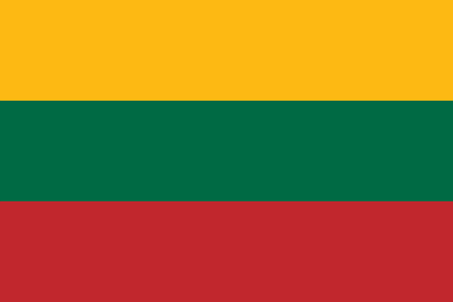

About Lithuania
 Lithuania; Lithuanian: Lietuva, officially the Republic of Lithuania (Lithuanian: Lietuvos Respublika), is a country in the Baltic region of Europe. It is one of three Baltic states and lies on the eastern shore of the Baltic Sea.
Lithuania shares land borders with Latvia to the north, Belarus to the east and south, Poland to the south, and Kaliningrad Oblast of Russia to the southwest. It has maritime border with Sweden to the west on the Baltic Sea.
Lithuania covers an area of 65,300 km2 (25,200 sq mi), with a population of 2.8 million. Its capital and largest city is Vilnius; other major cities are Kaunas and Klaipėda. Lithuanians belong to the ethno-linguistic group of
the Balts and speak Lithuanian, one of only a few living Baltic languages. For millennia the southeastern shores of the Baltic Sea were inhabited by various Baltic tribes. In the 1230s, Lithuanian lands were united by Mindaugas,
founding the Kingdom of Lithuania on 6 July 1253. In the 14th century, the Grand Duchy of Lithuania was the largest country in Europe; present-day Lithuania, Belarus, Ukraine, and parts of Poland and Russia were all lands of the Grand Duchy.
The Crown of the Kingdom of Poland and the Grand Duchy of Lithuania were in a de facto personal union from 1386 with the marriage of the Polish queen Hedwig and Lithuania's Grand Duke Jogaila, who was crowned King jure uxoris Władysław II Jagiełło of Poland.
The Commonwealth of Poland and Lithuania was established by the Union of Lublin in July 1569. The Commonwealth lasted more than two centuries, until neighbouring countries dismantled it in 1772–1795, with the Russian Empire annexing most of Lithuania's territory.
As World War I ended, Lithuania's Act of Independence was signed on 16 February 1918, founding the modern Republic of Lithuania. In World War II, Lithuania was occupied first by the Soviet Union and then by Nazi Germany. Towards the end of the war in 1944,
when the Germans were retreating, the Soviet Union reoccupied Lithuania. Lithuanian armed resistance to the Soviet occupation lasted until the early 1950s. On 11 March 1990, a year before the formal dissolution of the Soviet Union, Lithuania passed
the Act of the Re-Establishment of the State of Lithuania, becoming the first Soviet republic to proclaim its independence. Lithuania is a developed country, with a high income advanced economy; ranking very high in the Human Development Index.
It ranks favourably in terms of civil liberties, press freedom, internet freedom, democratic governance, and peacefulness. Lithuania is a member of the European Union, the Council of Europe, eurozone, the Nordic Investment Bank, Schengen Agreement,
NATO and OECD. It participates in the Nordic-Baltic Eight (NB8) regional co-operation format and is a permanent observer of Nordic Council. More information on this here
Fun Facts
- The name Lithuania was mentioned for the first time in the Annals of Quedlinburg in 1009. By the end of the 14th century, Lithuania was the largest country in Europe. The Kingdom of Lithuania was formed by numerous tribes living in the area at that moment.
- According to a study made by a French scientist in 1989, Lithuania is positioned in a geographical center of Europe.
- The Greek, Latin, German, Celtic, and the Slavic are one of the oldest languages in the World, but they are not even nearly as old as the Lithuanian tongue, which is the most ancient one from them all.
- Lithuania is the land of nature. Forests covers 1/3 of the country, including many protected regions, nature reserves and the national parks. Lithuania is also known as ‘the land of storks’, which is our national bird. Moreover, the country is home to one of the largest moving sand dunes in Europe. The Curonian Spit is a unique, vulnerable, sandy cultural landscape, that was formed and shaped by the sea, wind and some human activity. The Spit is located on a seashore, and also features small Curonian lagoon settlements.
- Basketball is the most popular sport in Lithuania, and it is said to be the second religion of our people. Lithuania has the fourth best basketball team in the World, which has won three bronze medals at the Olympics. Several Lithuanian basketball players have gone up to the NBA’s Hall of Fame, though the greatest star that the nation is particularly proud of is Arvydas Sabonis. The Lithuanian players who are currently in the NBA include: Jonas Valanciunas, Mindaugas Kuzminskas and Domas Sabonis.